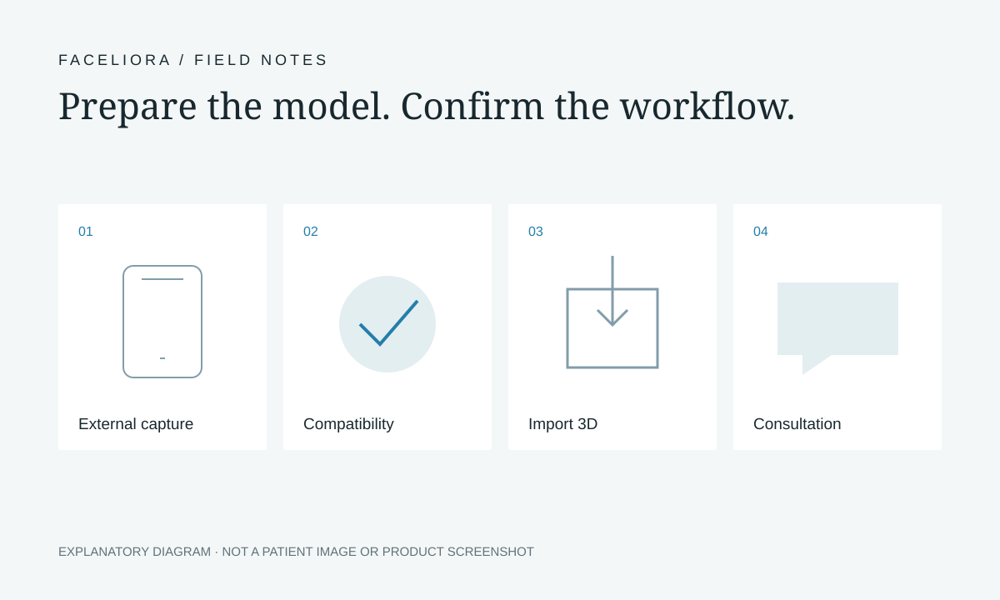

Preparing a 3D Facial Model for Faceliora Clinic: A Clinic Checklist
A useful demonstration starts with a clear account of how a model was created. Faceliora Clinic is 3D software for clinics: it imports facial models made on a phone using an external application. The capture application and Faceliora Clinic are separate parts of the workflow. This checklist helps your team prepare questions and a sample, without assuming that a particular phone, application or export format is supported.

Map the five stages before the demonstration
Write down your intended sequence: capture in an external application, export the model, confirm compatibility, import into Faceliora Clinic, then use the view during a discussion with a clinician. Keeping these stages separate makes it easier to identify which team or application can answer a question.
For example, a problem visible in the exported model should first be documented as an input issue. A question about opening or adjusting that model in Faceliora Clinic belongs in the import demonstration. A question about treatment suitability belongs with the qualified clinician.

Record the capture and export details
Ask the Faceliora team to confirm the exact setup before arranging a demonstration. Support should be checked for the combination you plan to use, rather than inferred from a phone brand or the word “3D”. This guide does not list approved scanners or file formats.
Keep the following details together with your questions. If you do not know an export setting, record it as unknown and ask how to find it.
- External capture application name and version.
- Phone or device model and operating-system version.
- Export option selected, file extension and any settings you changed.
- Whether the export includes separate companion files.
- The part of the workflow you want the demonstration to explain.
Make a visual check without judging clinical accuracy
In the capture application or its available viewer, inspect the model from the front, oblique angles and the side. Note obvious missing areas, distorted surfaces, unexpected protrusions or gaps. Check whether the same concern appears from more than one angle. Record what you see instead of silently correcting or ignoring it.
A visually tidy model is not proof of measurement accuracy or clinical suitability. Ask which input-quality checks the team recommends and which limitations remain after import. Where a view is unclear, keep the original export available so the issue can be discussed during the demonstration.
Keep export, compatibility and import as separate checks
An application offering an export button does not, by itself, confirm that the resulting model can be used in Faceliora Clinic. Ask the team to inspect your proposed export setup and explain the supported import steps. Do not rename a file extension to try to make it compatible.
During the demonstration, ask how to recognise the correct orientation and scale, and how to notice information that did not carry across. These are questions to confirm with the team, not a claim that every application transfers the same information. Preserve an unchanged source copy when comparing views.
Give each handoff a named owner
Agree who obtains permission for capture, who operates the external application, who checks the export and who prepares the Faceliora Clinic session. One person may cover several roles; the important part is that the responsibility is explicit.
Use your clinic’s existing process to identify the right case and distinguish the original model from an adjusted illustration. Ask the product team what information can accompany a model. Do not assume that case management, automatic audit logs or sharing controls are included without seeing and confirming them.
Ask about access, storage and retention before real client data
Map where a facial model would travel: phone, external application, export location and Faceliora Clinic environment. Each step may have a different operator and data-handling arrangement. Ask who can access it, where it is stored, how long it remains and how deletion requests are handled.
Confirm how your clinic will explain the purpose of capture and any proposed transfer. Ask the external provider and Faceliora team about their respective processes; this article does not certify security controls or establish your clinic’s legal obligations. Do not attach face models or client details to this website’s general contact form.
Bring a concise demonstration checklist
Start by sending a description of your setup and intended workflow. Ask how the team wants a sample supplied before sending any file. A non-client example, or another sample whose proposed use has been agreed, can keep the first discussion focused on compatibility.
- Application, device and version details; export settings and file information.
- Notes about missing areas, distortion or angle-dependent concerns.
- The tasks your staff want to perform after import.
- Questions about access, storage, retention and deletion.
- A named staff contact and the questions still awaiting confirmation.
Finish with a conversation, not a promised result
Once the model workflow is understood, discuss how an original view and an adjusted illustration will be explained to a client. The model can help describe preferences and questions. A clinician remains responsible for assessing suitability and discussing options; an adjusted view does not guarantee a treatment outcome.